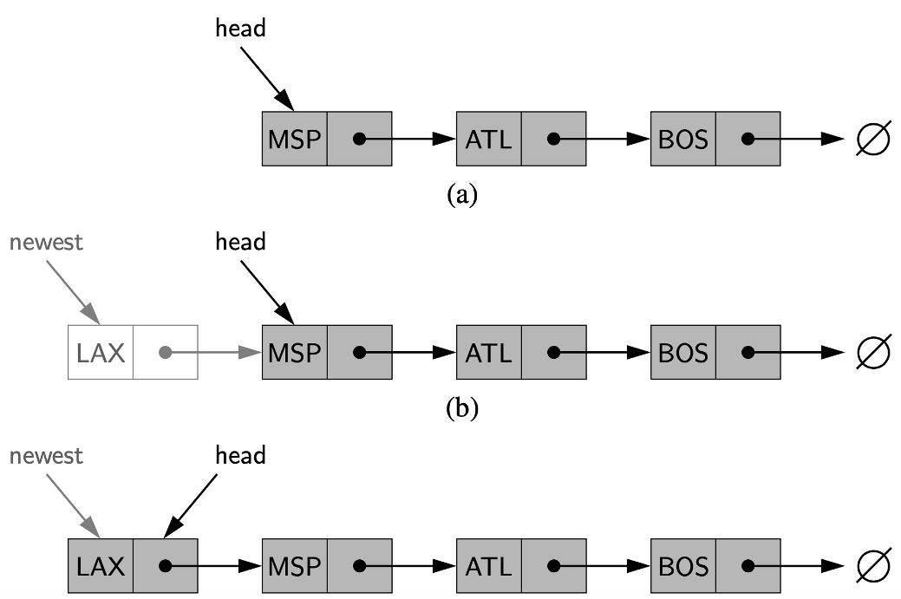

<!DOCTYPE html>
<html lang="en">
  <head>
    <meta charset="utf-8" />
    <meta name="viewport" content="width=device-width, initial-scale=1.0, maximum-scale=1.0, user-scalable=no" />

    <title></title>
    <link rel="stylesheet" href="dist/reveal.css" />
    <link rel="stylesheet" href="dist/theme/iph.css" id="theme" />
    <link rel="stylesheet" href="plugin/highlight/spyder.css" />
	<link rel="stylesheet" href="css/layout.css" />
	<link rel="stylesheet" href="plugin/customcontrols/style.css">


    <script defer src="dist/fontawesome/all.min.js"></script>

	<script type="text/javascript">
		var forgetPop = true;
		function onPopState(event) {
			if(forgetPop){
				forgetPop = false;
			} else {
				parent.postMessage(event.target.location.href, "app://obsidian.md");
			}
        }
		window.onpopstate = onPopState;
		window.onmessage = event => {
			if(event.data == "reload"){
				window.document.location.reload();
			}
			forgetPop = true;
		}

		function fitElements(){
			const itemsToFit = document.getElementsByClassName('fitText');
			for (const item in itemsToFit) {
				if (Object.hasOwnProperty.call(itemsToFit, item)) {
					var element = itemsToFit[item];
					fitElement(element,1, 1000);
					element.classList.remove('fitText');
				}
			}
		}

		function fitElement(element, start, end){

			let size = (end + start) / 2;
			element.style.fontSize = `${size}px`;

			if(Math.abs(start - end) < 1){
				while(element.scrollHeight > element.offsetHeight){
					size--;
					element.style.fontSize = `${size}px`;
				}
				return;
			}

			if(element.scrollHeight > element.offsetHeight){
				fitElement(element, start, size);
			} else {
				fitElement(element, size, end);
			}		
		}


		document.onreadystatechange = () => {
			fitElements();
			if (document.readyState === 'complete') {
				if (window.location.href.indexOf("?export") != -1){
					parent.postMessage(event.target.location.href, "app://obsidian.md");
				}
				if (window.location.href.indexOf("print-pdf") != -1){
					let stateCheck = setInterval(() => {
						clearInterval(stateCheck);
						window.print();
					}, 250);
				}
			}
	};


        </script>
  </head>
  <body>
    <div class="reveal">
      <div class="slides"><section  data-markdown><script type="text/template"><!-- .slide: class="has-light-background drop" data-background-color="#f8f8f8" -->
<div class="" style="position: absolute; left: 0px; top: 0px; height: 700px; width: 960px; min-height: 700px; display: flex; flex-direction: column; align-items: center; justify-content: center" absolute="true">

### Estructuras de Datos y Algoritmos

#### *Estructuras de Datos Lineales III*

[Eduardo Rosales](mailto:ee.rosales24@uniandes.edu.co)

Departamento de Ingeniería de Sistemas y Computación

Universidad de los Andes
</div></script></section><section  data-markdown><script type="text/template"><!-- .slide: class="has-light-background drop" data-background-color="#f8f8f8" -->
<div class="" style="position: absolute; left: 0px; top: 0px; height: 700px; width: 960px; min-height: 700px; display: flex; flex-direction: column; align-items: center; justify-content: center" absolute="true">

### Primer intento de implementación de una lista enlazada simple en Python
</div></script></section><section  data-markdown><script type="text/template"><!-- .slide: class="has-light-background drop" data-background-color="#f8f8f8" -->
<div class="" style="position: absolute; left: 0px; top: 0px; height: 700px; width: 960px; min-height: 700px; display: flex; flex-direction: column; align-items: center; justify-content: center" absolute="true">

### Primer intento

- En un primer intento se usará una lista de Python​:
    
	- `new_list()​`
		- Retornará una lista de Python vacía​
    
	- `is_empty()​`
		- Informará si se trata de una lista de Python vacía​
	    
	- `add_first(lst, elemento)​`
		- Añadirá un elemento al inicio de una lista Python​
</div></script></section><section  data-markdown><script type="text/template"><!-- .slide: class="has-light-background drop" data-background-color="#f8f8f8" -->
<div class="" style="position: absolute; left: 0px; top: 0px; height: 700px; width: 960px; min-height: 700px; display: flex; flex-direction: column; align-items: center; justify-content: center" absolute="true">

### `new_list()`

```python
def new_list():
    """
    Retorna una lista enlazada simple vacía.

    :returns: Una lista vacía.
    :rtype: list
    """
    return []
```


- Lista vacía​
	- Por definición, una lista vacía no contiene ningún elemento
	
	<br>

- **¿Complejidad temporal?**
	- &shy;<!-- .element: class="fragment" data-fragment-index="1" -->✅ **O(1)**
</div></script></section><section  data-markdown><script type="text/template"><!-- .slide: class="has-light-background drop" data-background-color="#f8f8f8" -->
<div class="" style="position: absolute; left: 0px; top: 0px; height: 700px; width: 960px; min-height: 700px; display: flex; flex-direction: column; align-items: center; justify-content: center" absolute="true">

### `is_empty()`

```python
def is_empty(lst):
    """
    Verifica si una lista enlazada simple está vacía.

    :param lst: La lista a verificar.
    :type lst: list

    :returns: True si la lista está vacía, False en caso contrario.
    :rtype: bool
    """
    return not lst
```


- Lista vacía​
	- Por definición, una lista vacía es _falsy_ (se resuelve a `False`)

	<br>

- **¿Complejidad temporal?**
	- &shy;<!-- .element: class="fragment" data-fragment-index="1" -->✅ **O(1)**
</div></script></section><section  data-markdown><script type="text/template"><!-- .slide: class="has-light-background drop" data-background-color="#f8f8f8" -->
<div class="" style="position: absolute; left: 0px; top: 0px; height: 700px; width: 960px; min-height: 700px; display: flex; flex-direction: column; align-items: center; justify-content: center" absolute="true">

### `add_first()` (1/3)


```python
def add_first(lst, elemento):
    """
    Agrega un elemento al inicio de la lista enlazada simple.

    :param lst: Lista a la que se le agregará el elemento.
    :type lst: list
    :param elemento: El elemento a agregar.
    :type elemento: any

    :returns: La lista con el elemento agregado al inicio.
    :rtype: list
    """
    return [elemento] + lst  # ó lst.insert(0, elemento)
```

- **¿Complejidad temporal?**
</div></script></section><section  data-markdown><script type="text/template"><!-- .slide: class="has-light-background drop" data-background-color="#f8f8f8" -->
<div class="" style="position: absolute; left: 0px; top: 0px; height: 700px; width: 960px; min-height: 700px; display: flex; flex-direction: column; align-items: center; justify-content: center" absolute="true">

### `add_first()` (2/3)

```python
def add_first(lst, elemento):
    return [elemento] + lst
```

- Concatenar implica copiar todos los elementos a una nueva lista

	<br>


- **¿Complejidad temporal?**
	- &shy;<!-- .element: class="fragment" data-fragment-index="1" -->❌ **O(n)**
</div></script></section><section  data-markdown><script type="text/template"><!-- .slide: class="has-light-background drop" data-background-color="#f8f8f8" -->
<div class="" style="position: absolute; left: 0px; top: 0px; height: 700px; width: 960px; min-height: 700px; display: flex; flex-direction: column; align-items: center; justify-content: center" absolute="true">

### `add_first()` (3/3)

```python
def add_first(lst, elemento):
    return lst.insert(0, elemento)
```

- Usar `list.insert()` implica desplazar todos los elementos de la lista

	<br>


- **¿Complejidad temporal?**
	- &shy;<!-- .element: class="fragment" data-fragment-index="1" -->❌ **O(n)**
</div></script></section><section  data-markdown><script type="text/template"><!-- .slide: class="has-light-background drop" data-background-color="#f8f8f8" -->
<div class="" style="position: absolute; left: 0px; top: 0px; height: 700px; width: 960px; min-height: 700px; display: flex; flex-direction: column; align-items: center; justify-content: center" absolute="true">

### Complejidad temporal  - Listas

<html lang="es">
<head>
    <meta charset="UTF-8">
    <meta name="viewport" content="width=device-width, initial-scale=1.0">
    <title>Tabla de Complejidad</title>
    <style>
        table {
            width: 100%;
            border-collapse: collapse;
            text-align: center;
            font-family: Arial, sans-serif;
        }
        th, td {
            border: 1px solid black;
            padding: 10px;
        }
        th {
            background-color: #cfe2f3;
            font-weight: bold;
        }
        td:first-child {
            font-weight: bold;
        }
    </style>
</head>
<body>
    <table>
        <tr>
            <th>Estructura de datos</th>
            <th>Acceso</th>
            <th>Inserción al inicio</th>
            <th>Eliminación al inicio</th>
            <th>Inserción al final</th>
            <th>Eliminación al final</th>
            <th>Inserción/Eliminación interna</th>
        </tr>
        <tr>
            <td>Array List</td>
            <td>O(1)</td>
            <td>O(n)</td>
            <td>O(n)</td>
            <td>O(1)*</td>
            <td>O(1)</td>
            <td>O(n)</td>
        </tr>
        <tr>
            <td>Single Linked List</td>
            <td>O(n)</td>
            <td><b>O(1)</b></td>
            <td>O(1)</td>
            <td>O(n)**</td>
            <td>O(n)</td>
            <td>O(n)</td>
        </tr>
        <tr>
            <td>Head-Tail List</td>
            <td>O(n)</td>
            <td><b>O(1)</b></td>
            <td>O(1)</td>
            <td>O(1)</td>
            <td>O(n)</td>
            <td>O(n)</td>
        </tr>
    </table>
</body>
</html>

 \* Amortizado
 
 \*\* Si  no hay una referencia a la cola (no es un head-tail list), se debe recorrer todos los nodos para insertar al final
</div></script></section><section  data-markdown><script type="text/template"><!-- .slide: class="has-light-background drop" data-background-color="#f8f8f8" -->
<div class="" style="position: absolute; left: 0px; top: 0px; height: 700px; width: 960px; min-height: 700px; display: flex; flex-direction: column; align-items: center; justify-content: center" absolute="true">

### ❌ Primer intento


- Es inaceptable que agregar al inicio de una lista enlazada simple 
	- Sea de complejidad O(n)
		- **Debería ser O(1)**
</div></script></section><section  data-markdown><script type="text/template"><!-- .slide: class="has-light-background drop" data-background-color="#f8f8f8" -->
<div class="" style="position: absolute; left: 0px; top: 0px; height: 700px; width: 960px; min-height: 700px; display: flex; flex-direction: column; align-items: center; justify-content: center" absolute="true">

### Segundo intento

- En un segundo intento se usará un diccionario de Python​:
    
	- `new_list()​`
		- Retornará `None` para representar a una lista vacía​
    
	- `is_empty()​`
		- Informará si se trata de una lista vacía​
    
	- `add(lst, elemento)​`
		- Añadirá un elemento al inicio de la lista
</div></script></section><section  data-markdown><script type="text/template"><!-- .slide: class="has-light-background drop" data-background-color="#f8f8f8" -->
<div class="" style="position: absolute; left: 0px; top: 0px; height: 700px; width: 960px; min-height: 700px; display: flex; flex-direction: column; align-items: center; justify-content: center" absolute="true">

### `new_list()`

```python

def new_list():
    """
    Retorna una lista enlazada simple vacía.
    
    Define la estructura usando un diccionario con
     ``first`` y ``last`` como None y el ``size`` en cero.

    :returns: Una lista vacía.
    :rtype: linked_list
    """
    newlist = {
        "first": None,
        "last": None,
        "size": 0,
    }
    return new_list
```

- Lista vacía​
	- Por definición, una lista vacía no contiene ningún elemento
	- El tamaño por defecto es cero
	
	<br>

- **¿Complejidad temporal?**
	- &shy;<!-- .element: class="fragment" data-fragment-index="1" -->✅ **O(1)**
</div></script></section><section  data-markdown><script type="text/template"><!-- .slide: class="has-light-background drop" data-background-color="#f8f8f8" -->
<div class="" style="position: absolute; left: 0px; top: 0px; height: 700px; width: 960px; min-height: 700px; display: flex; flex-direction: column; align-items: center; justify-content: center" absolute="true">

### `is_empty()`

```python
def is_empty(lst):
    """
    Verifica si la lista está vacía.

    :param lst: La lista a verificar.
    :type lst: dict

    :returns: True si la lista está vacía, False en caso contrario.
    :rtype: bool
    """
    return lst["size"] == 0
```

- Lista vacía​
	- El contador `size` es cero
		- Únicamente cuando la lista está vacía

	<br>

- **¿Complejidad temporal?**
	- &shy;<!-- .element: class="fragment" data-fragment-index="1" -->✅ **O(1)**
</div></script></section><section  data-markdown><script type="text/template"><!-- .slide: class="has-light-background drop" data-background-color="#f8f8f8" -->
<div class="" style="position: absolute; left: 0px; top: 0px; height: 700px; width: 960px; min-height: 700px; display: flex; flex-direction: column; align-items: center; justify-content: center" absolute="true">

# ¿Cómo implementar `add_first`?
</div></script></section><section  data-markdown><script type="text/template"><!-- .slide: class="has-light-background drop" data-background-color="#f8f8f8" -->
<div class="" style="position: absolute; left: 0px; top: 0px; height: 700px; width: 960px; min-height: 700px; display: flex; flex-direction: column; align-items: center; justify-content: center" absolute="true">

### Nodo (1/3)

- Unidad básica: 
	- Elemento fundamental en listas enlazadas

	<br>

- Almacenamiento dinámico: 
	- Permite gestionar memoria de forma flexible 
		- Sin reservar un tamaño fijo


	<br>

- Eficiencia en modificaciones: 
	- Inserciones y eliminaciones 
		- Mediante la actualización de referencias
</div></script></section><section  data-markdown><script type="text/template"><!-- .slide: class="has-light-background drop" data-background-color="#f8f8f8" -->
<div class="" style="position: absolute; left: 0px; top: 0px; height: 700px; width: 960px; min-height: 700px; display: flex; flex-direction: column; align-items: center; justify-content: center" absolute="true">

### Nodo (2/3)

- Enlace entre datos: 
	- Usa referencias para conectar nodos y recorrer la estructura

	<br>

- Soporte para estructuras avanzadas: 
	- Base para listas doblemente enlazadas, pilas y colas
</div></script></section><section  data-markdown><script type="text/template"><!-- .slide: class="has-light-background drop" data-background-color="#f8f8f8" -->
<div class="" style="position: absolute; left: 0px; top: 0px; height: 700px; width: 960px; min-height: 700px; display: flex; flex-direction: column; align-items: center; justify-content: center" absolute="true">

### Nodo (3/3)


</div></script></section><section  data-markdown><script type="text/template"><!-- .slide: class="has-light-background drop" data-background-color="#f8f8f8" -->
<div class="" style="position: absolute; left: 0px; top: 0px; height: 700px; width: 960px; min-height: 700px; display: flex; flex-direction: column; align-items: center; justify-content: center" absolute="true">

### `list_node.py` (1/2)

```python
def new_single_node(element):
    """
    Crea un nodo para una lista simplemente enlazada.

    :param element: Elemento a almacenar en el nodo.
    :type element: any
    :return: Nodo creado.
    :rtype: dict
    """
    return {"info": element, "next": None}
```

- Cada nodo es un diccionario
	- Con parejas llave-valor que modelan
		- Los datos: `"info"`
		- La referencia al siguiente nodo: `next`
	- Complejidad: 
		- &shy;<!-- .element: class="fragment" data-fragment-index="1" -->O(1)
</div></script></section><section  data-markdown><script type="text/template"><!-- .slide: class="has-light-background drop" data-background-color="#f8f8f8" -->
<div class="" style="position: absolute; left: 0px; top: 0px; height: 700px; width: 960px; min-height: 700px; display: flex; flex-direction: column; align-items: center; justify-content: center" absolute="true">

### `list_node.py` (2/2)

```python
def get_element(node):
    """
    Obtiene la información almacenada en un nodo.

    :param node: Nodo a examinar.
    :type node: dict
    :return: Información del nodo.
    :rtype: any
    """
    return node["info"]
```

- Permite obtener los datos en el nodo
	- Complejidad: 
		- &shy;<!-- .element: class="fragment" data-fragment-index="1" -->O(1)
</div></script></section><section  data-markdown><script type="text/template"><!-- .slide: class="has-light-background drop" data-background-color="#f8f8f8" -->
<div class="" style="position: absolute; left: 0px; top: 0px; height: 700px; width: 960px; min-height: 700px; display: flex; flex-direction: column; align-items: center; justify-content: center" absolute="true">

### `add_first()` (1/3)


</div></script></section><section  data-markdown><script type="text/template"><!-- .slide: class="has-light-background drop" data-background-color="#f8f8f8" -->
<div class="" style="position: absolute; left: 0px; top: 0px; height: 700px; width: 960px; min-height: 700px; display: flex; flex-direction: column; align-items: center; justify-content: center" absolute="true">

### `add_first()` (2/3)

```python
def add_first(my_list, element):
    """
    Inserta un elemento al inicio de una lista simplemente enlazada.

    :param my_list: Lista en la que se insertará el elemento.
    :type my_list: dict
    :param element: Elemento a insertar.
    :type element: any
    :return: Lista actualizada.
    :rtype: dict
    """
    new_node = node.new_single_node(element)
    new_node["next"] = my_list["first"]
    my_list["first"] = new_node

    if my_list["size"] == 0:
        my_list["last"] = new_node

    my_list["size"] += 1
    return my_list

```
</div></script></section><section  data-markdown><script type="text/template"><!-- .slide: class="has-light-background drop" data-background-color="#f8f8f8" -->
<div class="" style="position: absolute; left: 0px; top: 0px; height: 700px; width: 960px; min-height: 700px; display: flex; flex-direction: column; align-items: center; justify-content: center" absolute="true">

### `add_first()` (3/3)

```python
def add_first(my_list, element):
    # Crea un nuevo nodo con el elemento:
    new_node = node.new_single_node(element)
    
    # Apunta el nuevo nodo a la cabeza (primer nodo):
    new_node["next"] = my_list["first"]

    # Actualiza la referencia a la cabeza:
    my_list["first"] = new_node

    if my_list["size"] == 0:
        # Si la lista estaba vacía
	        # El nuevo nodo es también la cola (el útlimo nodo)
        my_list["last"] = new_node  

    # Incrementa el tamaño de la lista:
    my_list["size"] += 1  
    
    return my_list  # Retorna la lista actualizada
```
</div></script></section><section  data-markdown><script type="text/template"><!-- .slide: class="has-light-background drop" data-background-color="#f8f8f8" -->
<div class="" style="position: absolute; left: 0px; top: 0px; height: 700px; width: 960px; min-height: 700px; display: flex; flex-direction: column; align-items: center; justify-content: center" absolute="true">

### `add_first()` - Complejidad temporal (1/3)

- Crear un nuevo nodo
	- `node.new_single_node(element)` → O(1)
- Actualizar punteros 
	- `new_node["next"] = my_list["first"]` → O(1)
- Actualizar referencia al primer nodo 
	- `my_list["first"] = new_node` → O(1)
- Verificar si la lista está vacía 
	- `if my_list["size"] == 0:` → O(1)
</div></script></section><section  data-markdown><script type="text/template"><!-- .slide: class="has-light-background drop" data-background-color="#f8f8f8" -->
<div class="" style="position: absolute; left: 0px; top: 0px; height: 700px; width: 960px; min-height: 700px; display: flex; flex-direction: column; align-items: center; justify-content: center" absolute="true">

### `add_first()` - Complejidad temporal (2/3)


- Actualizar el último nodo si la lista estaba vacía 
	- `my_list["last"] = new_node` → O(1)
- Incrementar el tamaño de la lista 
	- `my_list["size"] += 1` → O(1)
- Retornar la lista actualizada
	- `return my_list` → O(1)
</div></script></section><section  data-markdown><script type="text/template"><!-- .slide: class="has-light-background drop" data-background-color="#f8f8f8" -->
<div class="" style="position: absolute; left: 0px; top: 0px; height: 700px; width: 960px; min-height: 700px; display: flex; flex-direction: column; align-items: center; justify-content: center" absolute="true">

### `add_first()` - Complejidad temporal (3/3)

<br>

- ❌ Primer intento
	- ~Complejidad: O(n)~
		- **Debería ser O(1)**

<br>

- ✅  Segundo intento
	- **Complejidad: O(1)**
</div></script></section><section  data-markdown><script type="text/template"><!-- .slide: class="has-light-background drop" data-background-color="#f8f8f8" -->
<div class="" style="position: absolute; left: 0px; top: 0px; height: 700px; width: 960px; min-height: 700px; display: flex; flex-direction: column; align-items: center; justify-content: center" absolute="true">

### Ejercicio en clase:  `add_last()`


</div></script></section><section  data-markdown><script type="text/template"><!-- .slide: class="has-light-background drop" data-background-color="#f8f8f8" -->
<div class="" style="position: absolute; left: 0px; top: 0px; height: 700px; width: 960px; min-height: 700px; display: flex; flex-direction: column; align-items: center; justify-content: center" absolute="true">

### Ejercicio en clase :  `add_last()` - Solución (1/3)

```python
def add_last(my_list, element):
    """
    Inserta un elemento al final de una lista simplemente enlazada.

    :param my_list: Lista en la que se insertará el elemento.
    :type my_list: dict
    :param element: Elemento a insertar.
    :type element: any
    :return: Lista actualizada.
    :rtype: dict
    """
```
</div></script></section><section  data-markdown><script type="text/template"><!-- .slide: class="has-light-background drop" data-background-color="#f8f8f8" -->
<div class="" style="position: absolute; left: 0px; top: 0px; height: 700px; width: 960px; min-height: 700px; display: flex; flex-direction: column; align-items: center; justify-content: center" absolute="true">

### Ejercicio en clase :  `add_last()` - Solución (2/3)

```python
    ...
    
    # Crea un nuevo nodo con el elemento.
    new_node = node.new_single_node(element)

    # Si la lista está vacía, el nuevo nodo es el primero
    if my_list["size"] == 0:
        my_list["first"] = new_node
    else:
        # Conecta la cola (último nodo) al nuevo nodo
        my_list["last"]["next"] = new_node

```
</div></script></section><section  data-markdown><script type="text/template"><!-- .slide: class="has-light-background drop" data-background-color="#f8f8f8" -->
<div class="" style="position: absolute; left: 0px; top: 0px; height: 700px; width: 960px; min-height: 700px; display: flex; flex-direction: column; align-items: center; justify-content: center" absolute="true">

### Ejercicio en clase :  `add_last()` - Solución (3/3)

```python
def add_last(my_list, element):
   ...

    # Actualiza la referencia a la cola (último nodo)
    my_list["last"] = new_node

    # Aumenta el tamaño de la lista.
    my_list["size"] += 1  

    return my_list  # Retorna la lista actualizada.
```
</div></script></section><section  data-markdown><script type="text/template"><!-- .slide: class="has-light-background drop" data-background-color="#f8f8f8" -->
<div class="" style="position: absolute; left: 0px; top: 0px; height: 700px; width: 960px; min-height: 700px; display: flex; flex-direction: column; align-items: center; justify-content: center" absolute="true">

### Ejercicio en clase: `get_element()`

```python
def get_element(lst, pos):
    """
	Obtiene el elemento en la posición ``pos`` de una lista simplemente enlazada.

    Recorre la lista hasta la posición ``pos`` y retorna su contenido sin
	modificar la lista. La posición debe ser un entero mayor o igual a 0 y menor 
	que el tamaño de la lista. La lista no puede estar vacía.

    :param lst: Lista simplemente enlazada.
    :type lst: dict
    :param pos: Posición del elemento a obtener.
    :type pos: int
    :return: Elemento en la posición ``pos``.
    :rtype: any
    """
```
</div></script></section><section  data-markdown><script type="text/template"><!-- .slide: class="has-light-background drop" data-background-color="#f8f8f8" -->
<div class="" style="position: absolute; left: 0px; top: 0px; height: 700px; width: 960px; min-height: 700px; display: flex; flex-direction: column; align-items: center; justify-content: center" absolute="true">

### Ejercicio en clase: `get_element()` -  Tips

- Inicialización:
	- Se establece la posición de búsqueda en `1` y 
		- Se apunta al primer nodo de la lista
- Recorrido:
	- Se avanza nodo por nodo hasta alcanzar la posición `pos`
- Actualización:
	- En cada iteración, se incrementa la posición y se mueve al siguiente nodo
- Resultado: 
	- Cuando se alcanza `pos`
		- Se retorna la información almacenada en el nodo
</div></script></section><section  data-markdown><script type="text/template"><!-- .slide: class="has-light-background drop" data-background-color="#f8f8f8" -->
<div class="" style="position: absolute; left: 0px; top: 0px; height: 700px; width: 960px; min-height: 700px; display: flex; flex-direction: column; align-items: center; justify-content: center" absolute="true">

<i class="fas fa-question-circle fa-2x fa-spin fa-4x"></i>


<br>
<br>


[<i class="fas fa-home  fa-3x"></i>](https://eerosales24.github.io/eda_2025_10/#)
</div></script></section></div>
    </div>

    <script src="dist/reveal.js"></script>

    <script src="plugin/markdown/markdown.js"></script>
    <script src="plugin/highlight/highlight.js"></script>
    <script src="plugin/zoom/zoom.js"></script>
    <script src="plugin/notes/notes.js"></script>
    <script src="plugin/math/math.js"></script>
	<script src="plugin/mermaid/mermaid.js"></script>
	<script src="plugin/chart/chart.min.js"></script>
	<script src="plugin/chart/plugin.js"></script>
	<script src="plugin/customcontrols/plugin.js"></script>

    <script>
      function extend() {
        var target = {};
        for (var i = 0; i < arguments.length; i++) {
          var source = arguments[i];
          for (var key in source) {
            if (source.hasOwnProperty(key)) {
              target[key] = source[key];
            }
          }
        }
        return target;
      }

	  function isLight(color) {
		let hex = color.replace('#', '');

		// convert #fff => #ffffff
		if(hex.length == 3){
			hex = `${hex[0]}${hex[0]}${hex[1]}${hex[1]}${hex[2]}${hex[2]}`;
		}

		const c_r = parseInt(hex.substr(0, 2), 16);
		const c_g = parseInt(hex.substr(2, 2), 16);
		const c_b = parseInt(hex.substr(4, 2), 16);
		const brightness = ((c_r * 299) + (c_g * 587) + (c_b * 114)) / 1000;
		return brightness > 155;
	}

	var bgColor = getComputedStyle(document.documentElement).getPropertyValue('--r-background-color').trim();
	var isLight = isLight(bgColor);

	if(isLight){
		document.body.classList.add('has-light-background');
	} else {
		document.body.classList.add('has-dark-background');
	}

      // default options to init reveal.js
      var defaultOptions = {
        controls: true,
        progress: true,
        history: true,
        center: true,
        transition: 'default', // none/fade/slide/convex/concave/zoom
        plugins: [
          RevealMarkdown,
          RevealHighlight,
          RevealZoom,
          RevealNotes,
          RevealMath.MathJax3,
		  RevealMermaid,
		  RevealChart,
		  RevealCustomControls,
        ],


    	allottedTime: 120 * 1000,

		mathjax3: {
			mathjax: 'plugin/math/mathjax/tex-mml-chtml.js',
		},
		markdown: {
		  gfm: true,
		  mangle: true,
		  pedantic: false,
		  smartLists: false,
		  smartypants: false,
		},

		mermaid: {
			theme: isLight ? 'default' : 'dark',
		},

		customcontrols: {
			controls: [
			]
		},
      };

      // options from URL query string
      var queryOptions = Reveal().getQueryHash() || {};

      var options = extend(defaultOptions, {"width":960,"height":700,"margin":"0.025","minScale":"0.1","maxScale":"2.0","controls":"true","controlsLayout":"bottom-right","progress":"true","slideNumber":"true","center":"false","transition":"slide","transitionSpeed":"default"}, queryOptions);
    </script>

    <script>
      Reveal.initialize(options);
    </script>
  </body>

  <!-- created with Advanced Slides -->
</html>
